Robotic manipulation in environments such as biochemical laboratories and kitchens faces challenges due to the rheological heterogeneity of materials, affecting their mechanical response to external forces. Traditional approaches often focus on manipulating materials of a single rheological type, neglecting how operational strategies must adapt when handling materials with varying flow and deformation characteristics. In this work, we introduce a hierarchical decision-making robotic manipulation system for cross-rheological material handling, namely RheoAgent, to tackle the robotics manipulation challenges posed by diverse rheological material scenarios. Our approach leverages dual-modal vision-driven reinforcement learning, which integrates pixel and voxel map representations, while additionally incorporating material classification from large vision-language models. This integration forms a system capable of flexible operations across various rheological materials. We adopt a curriculum-based differentiable training framework to balance learning efficiency and model accuracy. The policy is first pre-trained on simplified particle-based dynamics, followed by fine-tuning using a model-based short-horizon actor-critic algorithm to incorporate specific rheological characteristics. Under this framework, the pouring and gathering tasks achieved success rates of 99.08% and 95.12% for inviscid materials, 99.07% and 96.98% for viscous materials, and 98.53% and 97.51% for elasto-plastic materials, respectively. RheoAgent establishes a new framework for intelligent rheological material handling, with applications that extend to industrial automation, laboratory robotics, and assistive technologies.


 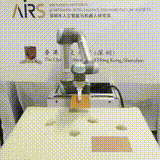
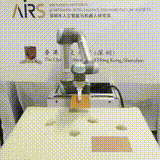

 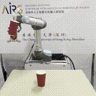
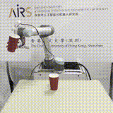
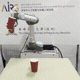
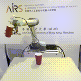

 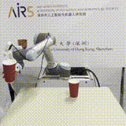
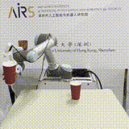


 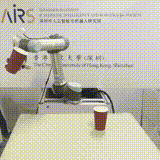
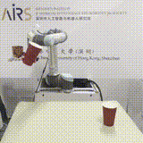
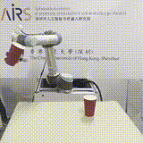
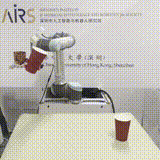
 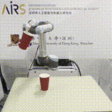
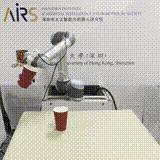
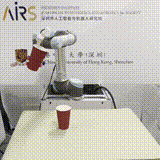
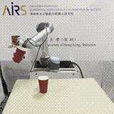
 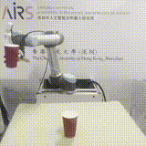
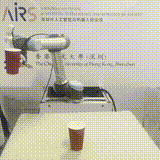
 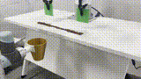
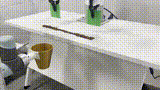